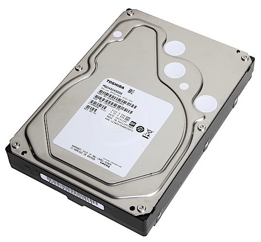
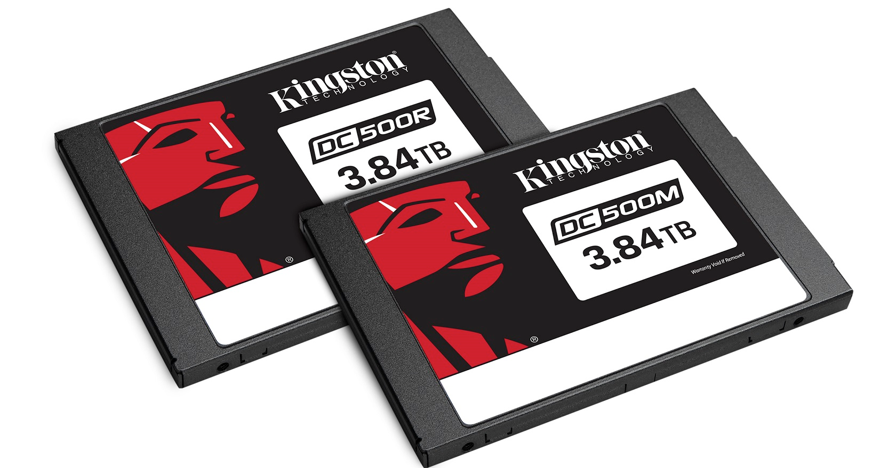
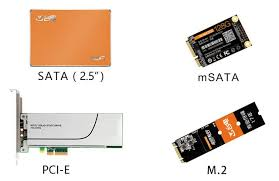

儲存裝置 Storage
儲存裝置是用於儲存資訊的裝置或裝置。通常是將資訊數位化後再以利用電、磁或光學等方式的媒體加以儲存。
機械式硬碟
機械式硬碟是電腦上使用堅硬的旋轉碟片為基礎的非揮發性記憶體，它在平整的磁性表面儲存和檢索數字資料，資料通過離磁性表面很近的磁頭由電磁流來改變極性的方式被寫入到磁碟上，資料可以通過碟片被讀取，原理是磁頭經過碟片的上方時碟片本身的磁場導致讀取線圈中電氣訊號改變。硬碟的讀寫是採用隨機存取的方式，因此可以以任意順序讀取硬碟中的資料。硬碟包括一至數片高速轉動的碟片以及放在致動器懸臂上的磁頭。
因為本身容量大且價格便宜，通常這種硬碟會用於D槽存放資料，但缺點是讀取速度慢，通常現今一般的個人電腦會加裝到1TB的D槽容量，若有其他存放影片或遊戲的需求，可考慮上到2TB
固態硬碟
固態硬碟是一種主要以快閃記憶體(NAND Flash)作為永久性記憶體的電腦儲存裝置。
固態硬碟採用SATA-III、PCIe x8或者mSATA、M.2、ZIF、IDE、U.2、CF、CFast等介面。由於價格及儲存空間與機械硬碟有巨大差距，固態硬碟無法取代機械式硬碟。
因為本身讀取速度快，但價格高，因此通常會用於系統碟C槽，一般現今的個人電腦會加裝最低的128GB或256GB，加快系統速度，但若只安裝固態硬碟或有電競的需求，可上到512GB，不過價格也相對較高
硬碟接孔
硬碟的讀取速度也可以從接孔類型推測，常見的接孔分別為PCIE、M.2、SATA-III、SATA，讀取速度也由此快到慢排列，但越快的硬碟價格也相對較高
安裝機械式硬碟
安裝固態硬碟